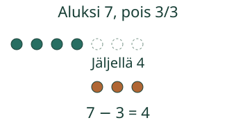
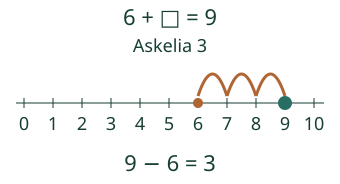
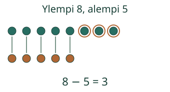

Aavan simpukat: 7, joista 3 pois. Montako jää? Kokeile yksi kerrallaan.
Näin tuttu plussa auttaa miinuksessa
Osa pois, toinen osa jää

Jos pois otetaan paljon, etsi puuttuva osa

Voit myös laskea taaksepäin. Esimerkiksi 8 − 2: ensin 7, sitten 6. Valitse sinua auttava tapa; tässä ei mitata nopeutta.
Ero ilman pois ottamista

Ennusta
Mikä muuttuu laskuissa 7 − 0 ja 7 − 7?
Paljasta ajatus
Nollan poistaminen jättää 7. Kun kaikki 7 otetaan pois, jäljellä on 0. Voit kokeilla mallissa.
Kokeile itse
Voit vastata suoraan tai käyttää mallia ja vihjettä. Mallin katsominen on apua. Harjoitus ei tallenna oppilastietoja eikä anna hallintamerkintää.
Lisää tutkittavaa
Kokeile kaikkia laskuja, joiden koko on 10. Kun pois otettava osa kasvaa yhdellä, jäljelle jäävä osa pienenee yhdellä. Mikä tuttu kymppipari auttaa? Kokeile myös tapauksia 0 − 0 ja 10 − 10.
Lopuksi: miten 7 + 2 = 9 auttaa ratkaisemaan 9 − 7? Voit kirjoittaa, näyttää merkeillä tai osoittaa kuvasta.
Opettajalle ja ilman ruutua
Luokat 1–2. Vaadittu esitieto on M-NUM-18 (lukuhajotelmat). Käänteisyys M-ADD-SUB-01 on vahva tuki, ei lisäportti; yhteys näytetään tässä uudelleen. Anna 7 irtomerkkiä ja siirrä 3 sivuun. Vertaa sitten 8 ja 5 merkkiä pareina siirtämättä kumpaakaan pois. Käytä nollan ja kaikkien poistamisen rajoja.
Kaikki 66 kokonaislukulaskua 0≤osa≤koko≤10 ovat valittavissa. Numerovastaus ei osoita tietyn strategian käyttöä, muistista palauttamisen nopeutta, itsenäisyyttä tai pysyvää sujuvuutta. Ohjeet ja kuvien määrät ovat tukea. Palaa eri laskuihin myöhemmin; tässä ei tehdä ajoitettua arviointia, muodollista hallintapäätöstä tai oppilashistoriaa.